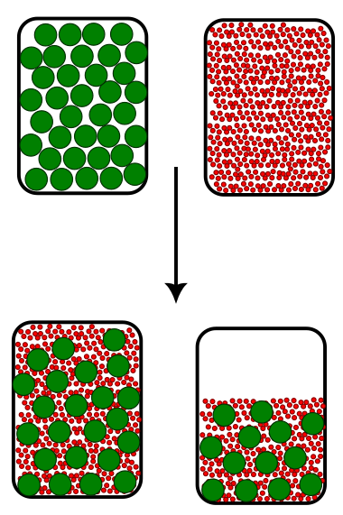
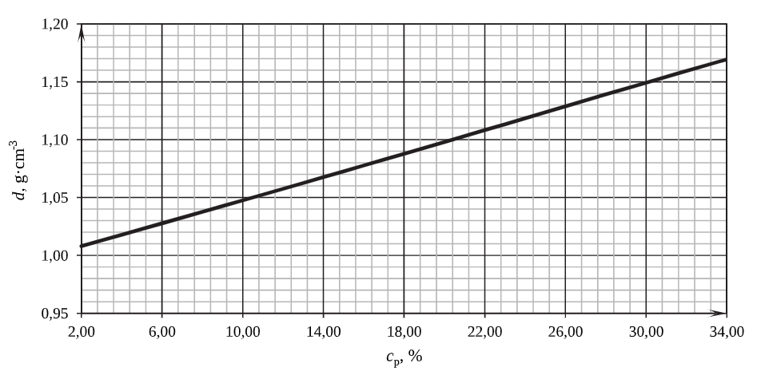
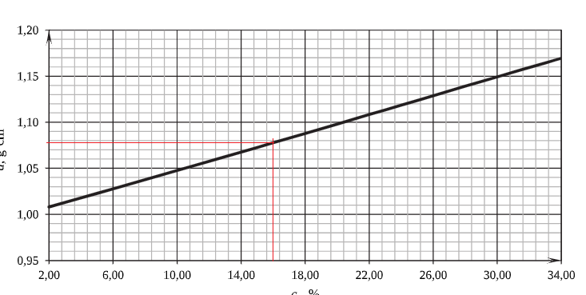

Kontrakcja – zasada działania
Podczas mieszania dwóch cieczy może występować proces zmniejszenia objętości roztworu, tzn. łączna objętość uzyskana po zmieszaniu dwóch cieczy jest mniejsza niż suma objętości cieczy przed zmieszaniem. Świetnym modelem, który tłumaczy takie zachowanie jest mieszanie słoika grochu i słoika piasku. Ile łącznie słoików uzyskamy? Właśnie nie dwa ani nie jeden, bo pomiędzy ziarnami grochu występują wolne przestrzenie, w które mogą wejść mniejsze cząsteczki – cząsteczki piasku.

Po wymieszaniu tych składników uzyskamy razem około półtorej słoika, bo całość przestrzeni między groszkami zostanie wypełniona przez piasek, co spowoduje ich lepsze wypełnienie niż w przypadku samych groszków.. Proces ten jest totalnie zrozumiały dla makroświata, tak w mikroświecie działa on tak samo – mniejsze cząsteczki wchodzą między większe cząsteczki. Proces ten nazywa się kontrakcją i występuje praktycznie zawsze przy mieszaniu roztworów. WNIOSEK DLA ROZWIĄZYWANIA ZADAŃ JEST TAKI, ŻE DODAWANIE OBJĘTOŚCI DWÓCH ROZTWORÓW JAKO OBJĘTOŚCI CAŁKOWITEJ MOŻE PROWADZIĆ DO BŁĘDU. Kontrakcja ma znaczenie podczas mieszania dwóch różne rozpuszczalników zmieszania stężonych roztworów tego samego rozpuszczalnika. NA POZIOM MATURY należy być świadomym, że w tych zadaniach maturalnych, w których możemy założyć, że objętość sumaryczna jest sumą objętości po prostu piszą to w treści zadania możesz założyć, że objętość sumaryczna jest sumą objętości. Mogliby napisać miej w dupie kontrakcję, ale piszą załóż, że objętość sumaryczna jest sumą objętości. Problem jest z gorzej napisanymi zbiorami zadań – w tym wypadku potrafią pominąć zapisanie tej zależności, natomiast sensowanych pomysłem jest olewanie kontrakcji, jeżeli stężenie jest więdnie niskie \(< 10 - 20\%\) lub \(< 1\frac{mol}{dm^{3}}\) .
Które parametry w takim razie możemy sumować podczas rozwiązywania zadania?
Oczywiście możemy sumować objętości, jeżeli w zadaniu mamy podane, że nie mamy kontrakcji.
Natomiast zawsze możemy sumować masy wszelkich związków, a więc zarówno roztworu, rozpuszczalnika jak i masy substancji rozpuszczonej, o ile są one tę samą substancją.
Zmieszano \(200.00cm^{3}\) technicznego kwasu solnego o stężeniu 30.00% (wyrażonym w procentach masowych) i \(200.00cm^{3}\) wody destylowanej. Na wykresie przedstawiono zależność gęstości kwasu solnego od jego stężenia procentowego.

Oblicz stężenie procentowe (w procentach masowych) otrzymanego kwasu solnego. Przyjmij, że gęstość wody wynosi \(1\ g·cm^{- 3}\)
Ogólna technika rozwiązywania zadań polega na wypisaniu danych oraz szukanych z treści zadania, w celu powiązania tych wielkości bilansem mas oraz wzorami \(c_{p} = \frac{m_{s}}{m_{r}};d = \frac{m_{r}}{V_{r}};c_{m} = \frac{n_{s}}{V_{r}}\) .
W przypadku naszego zadania dane mają postać:
\[V_{HCl}^{1} = 200cm^{3}\ \ \ c_{p} = 30\%\ \]
\[V_{H_{2}O} = 200cm^{3}\ \ d_{H_{2}O} = 1\frac{g}{cm^{3}}\]
\[c_{p}^{po} = ?\]
.
Sumować za zawsze możemy masy, więc przydałoby się je obliczyć na początku.
W zadaniu podany jest wykres gęstości w zależności od stężenia procentowego:.
\[d = f\left( c_{p} \right)\]
Gęstość łączy masę roztworu i jego objętość, więc znając stężenie procentowe roztworu mogę odczytać jego masę, a kolejno z objętości roztworu i gęstości obliczyć masę roztworu. Rozpocznijmy od pierwszego wyjściowego roztworu, tego o masie 200 \(cm^{3}\) :
Gęstość tego roztworu wynosi odczytuje z wykresu, dla 30% gęstość równa jest \(1.15\frac{g}{cm^{3}}\)
\[c_{p} = 30\% \rightarrow d = 1.15\frac{g}{cm^{3}}\]
Co mi daje dodatkową daną, informacje o tym roztworze to:
\[V_{HCl}^{1} = 200cm^{3}\ \ \ c_{p} = 30\%\ \ d = 1.15\frac{g}{cm^{3}}\]
Kolejno wykorzystuje wzory związane z roztworami:
\[\mathbf{c}_{\mathbf{p}} = \frac{m_{s}}{m_{R}};\ \mathbf{\ \ d} = \frac{m_{R}}{\mathbf{V}_{\mathbf{R}}}\ ;\ \ \ c_{M} = \frac{n_{S}}{\mathbf{V}_{\mathbf{R}}}\]
Wówczas mogę obliczyć masę roztworu jako iloczyn objętości roztworu i gęstości:
\[d = \frac{m_{R}}{V_{R}}\]
\[m_{R} = V_{R}d = 200·1.15 = 230g\]
Kolejno obliczam masę substancji rozpuszczonej:
\[c_{P} = \frac{m_{S}}{m_{R}}100\%\]
\[30\% = \frac{m_{S}}{230}100\%\]
\[m_{S} = 69g\]
Z bilansu May roztworu mogę powiedzieć, ile wody znajduje się w roztworze:
\[m_{H_{2}O}^{roztw1} + m_{S} = m_{R}\]
\[m_{H_{2}O}^{roztw1} = 230 - 69 = 161\]
Kolejno obliczam wodę
\[V = 200cm^{3};d = 1\frac{g}{cm^{3}}\]
\[\mathbf{c}_{\mathbf{p}} = \frac{m_{s}}{m_{R}};\ \mathbf{\ \ }\mathbf{d} = \frac{m_{R}}{\mathbf{V}_{\mathbf{R}}}\ ;\ \ \ c_{M} = \frac{n_{S}}{\mathbf{V}_{\mathbf{R}}}\]
\[d = 1\frac{g}{cm^{3}} = \frac{m_{H_{2}O}^{2probce}}{200} \rightarrow m_{H_{2}O} = 200g\]
Następnie sumuję masy substancji znajdujących się w obu roztworach:
\[m_{HCl}^{calk} = m_{s}^{1roztw} = 69g\]
\[m_{roztw}^{po\ zmieszaiu} = m_{roztw}^{1} + m_{roztw}^{2} = 230 + 200 = 430\]
Obliczenie stężenia procentowego jest wówczas banalne:
\[c_{p}^{pozmien} = \frac{m_{HCl}^{calk}}{m_{roztw}^{po\ zmieszaiu}} = \frac{69}{430} = 16.0\%\]
Obliczone stężenie wykorzystuje do odczytania gęstości z wykresu:

\[c_{p} = 16\% -^{mam\ tabelke} \rightarrow d = 1.078\frac{g}{cm^{3}}\]
Kolejno mając gęstość i masę roztworu obliczam objętość:
\[d = \frac{m_{R}}{V_{R}} \rightarrow V_{R} = \frac{m_{R}}{d} = \frac{430}{1.078} = 398.9cm^{3}\]
Oblicz stężenie molowe otrzymanego kwasu solnego. Przyjmij, że objętość tego roztworu jest sumą objętości kwasu solnego technicznego i wody:
\[c_{mol} = \frac{n_{S}}{V_{R}}\]
Objętość roztworu oczywiście możemy policzyć teraz jako sumę objętości użytych roztworów (brak kontrakcji) \(200 + 200 = 400cm^{3} = 0.4dm^{3}\)
Natomiast w jaki sposób obliczyć mole substancji rozpuszczonej?
Używamy obliczonej wcześniej masy \(HCl\) :
\[m_{HCl}^{calk} = m_{s}^{1roztw} = 69g\]
Przeliczenie masy na mole jest chyba więcej niż proste.
\[n_{HCl} = \frac{m}{M} = \frac{69}{36.5} = 1.89\]
Kolejno dzielimy przez siebie mole i objętość uzyskując stężenie:
\[c_{mol} = \frac{n_{S}}{V_{R}} = \frac{1.89}{0.4} = 4.725\frac{mol}{dm^{3}}\]
Zmieszano dwa roztwory wodne wodorotlenku potasu (roztwór A i roztwór B) i otrzymano roztwór C. Roztwór A o gęstości \(d = 1.1818\ g·cm^{- 3}\) otrzymano przez rozpuszczenie 40g stałego KOH w 160g Woy. Roztwór B o gęstości \(1.221g·cm^{- 3}\) i stężeniu procentowym KOH 24% masowych miał objętość 500cm^3
Oblicz przybliżone stężenie molowe roztworu C. Wynik zaokrąglij do dwóch miejsc po przecinku. Przyjmij, że objętość roztworu C jest sumą objętość roztworu \(A\) i \(B\) :
Przybliżoną wartość policzmy, natomiast dokładną też możemy, jeżeli podadzą nam tablice gęstości.
Dla przybliżonej, w której olewam kontrakcję i zakładam, że \(V_{sum}\) jest sumą \(V_{A} + V_{B}\)
\[c_{mol} = \frac{n_{sum}}{V_{sum}}\]
Dla roztworów wypisuje dane:
\[A:1.1818\frac{g}{cm^{3}} = d;m_{KOH} = 40\ \ m_{H_{2}O} = 160g\]
\[B:d = 1.221\frac{g}{cm^{3}};c_{p} = 40\%;V = 500cm^{3}\]
Wykorzystując poniższe wzory rozbijam każdy roztwór, tak aby znał masę każdego ze składników:
\[c_{p} = \frac{m_{s}}{m_{R}};\ \ \ d = \frac{m_{R}}{V_{R}}\ ;\ \ \ c_{M} = \frac{n_{S}}{V_{R}}\]
Dla A
\[A:1.1818\frac{g}{cm^{3}} = d;m_{KOH} = 40\ \ m_{H_{2}O} = 160g\]
\[\mathbf{c}_{\mathbf{p}} = \frac{m_{s}}{m_{R}} = \frac{40}{40 + 160} = 20\%\ \ \ \ \ \ d = \frac{m_{R}}{V_{R}} \rightarrow 1.1818 = \frac{40 + 160}{V_{R}} \rightarrow V_{R} = 169.2cm^{3} = 0.1692dm^{3}\]
\[n_{S} = \frac{40}{56} = 0.714\ \ \ \ \ \ c_{mol} = \frac{n}{V} = \frac{\frac{40}{56}}{0.1692} = 4.22\frac{mol}{dm^{3}}\]
Dla roztworu B
\[B:d = 1.221\frac{g}{cm^{3}};c_{p} = 40\%;V = 500cm^{3}\]
\[c_{p} = \frac{m_{s}}{m_{R}};\ \ \ d = \frac{m_{R}}{V_{R}}\ ;\ \ \ c_{M} = \frac{n_{S}}{V_{R}}\ \ \ \ \ n_{S} = \frac{m_{S}}{M_{S}}\]
\[d = 1.221 = \frac{m_{R}}{500} \rightarrow m_{R} = 610.5g\]
\[c_{P} = \frac{m_{S}}{m_{R}} \rightarrow 40\% = \frac{m_{S}}{610.5}100\% \rightarrow 244.2g = m_{S}\]
\[n_{S} = \frac{m_{S}}{M_{S}} = \frac{244.2}{56} = 4.36\ mol\]
\[C_{mol} = \frac{n_{S}}{V_{R}} = \frac{4.36}{0.5} = 8.72\frac{mol}{dm^{3}}\]
Dla sumy roztworów, przy założeniu, że mogę sumować objętości – brak kontrakcji
\[V_{sum} = V_{rA} + V_{rB} = 169.2 + 500 = 669.2cm^{3}\]
\[n_{Sum} = n_{S}^{A} + n_{S}^{B} = 0.714 + 4.36 = 5.074mol\]
I na końcu obliczam stężenie molowe
\[c_{mol} = \frac{n_{sum}}{V_{sum}} = \frac{5.074}{0.6692} = 7.58\frac{mol}{dm^{3}}\]
Jeżeli natomiast nie mógłbym sumować objętości to muszę sumować masy
\[m_{S} = m_{S}^{A} + m_{S}^{B} = 40 + 244.2 = 284.2\]
\[m_{R} = m_{R}^{A} + m_{R}^{B} = 40 + 160 + 610.5 = 810.5g\]
Z mas obliczam stężenie procentowe
\[c_{p} = \frac{284.2}{810.5} = 35\%\]
I wykorzystując tablicę \(d = f\left( c_{p} \right)\) odczytuję gęstość
\[d_{KOH}^{35\%} = 1.341\frac{g}{cm^{3}}\]
I to jest z https://www.naukowiec.org/tablice/chemia/gestosc-d-g_366.html
A kolejno mając gęstość, masę molową substancji rozpuszczonej i stężenie procentowe używam wzoru „ciążowego” w celu obliczenia stężenia molowego:
\[c_{M} = \frac{c_{P}d}{M100\%}·1000\]
\[c_{M} = \frac{35·1.341}{56·100}·1000 = 8.38125\]
\[v_{r}^{PO} = \frac{m}{d} = \frac{810.5}{1.341} = 604.4\ cm^{3} = 0.6044dm^{3}\]
A więc dodając objętości do siebie popełniam błąd na poziomie 10% (suma objętości to \(0.6692\) ).
W trakcie mieszania dwóch cieczy sumaryczna masa roztworu jest równa sumie mas mieszanych składników, jednak końcowa objętość mieszaniny jest najczęściej różna od sumy objętości mieszanych składników. Zjawisko zmniejszenia lub zwiększenia objętości cieczy podczas mieszania nazywamy odpowiednio kontrakcją lub dylatacją objętości. W tabeli poniżej przedstawiono wartości gęstości wodnego roztworu kwasu siarkowego(VI) w zależności od jego stężenia w temperaturze 20°C.
| Procent masowy \(H_{2}SO_{4}\) | Gęstość \(g·cm^{- 3}\) | Procent masowy \(H_{2}SO_{4}\) | Gęstość \(g·cm^{- 3}\) | Procent masowy \(H_{2}SO_{4}\) | Gęstość \(g·cm^{- 3}\) |
|---|---|---|---|---|---|
| \[1\] | \[1.005\] | \[45\] | \[1.348\] | \[80\] | \[1.727\] |
| \[5\] | \[1.032\] | \[50\] | \[1.395\] | \[90\] | \[1.814\] |
| \[10\] | \[1.066\] | \[55\] | \[1.445\] | \[93\] | \[1.828\] |
| \[20\] | \[1.139\] | \[60\] | \[1.498\] | \[96\] | \[1.836\] |
| \[30\] | \[1.219\] | \[65\] | \[1.553\] | \[100\] | \[1.831\] |
| \[40\] | \[1.303\] | \[70\] | \[1/6111\] |
Gęstość wody w temperaturze 20°C wynosi \(0,998\ g\ \bullet \ cm^{- 3}\) .
Wykonaj odpowiednie obliczenia i na ich podstawie uzupełnij poniższy tekst.
Rozcieńczanie kwasu siarkowego(VI) to proces egzotermiczny. W wyniku zmieszania równych objętości wody i stężonego roztworu kwasu siarkowego(VI) o stężeniu 93% masowych i ochłodzeniu otrzymanego roztworu do temperatury 20°C, sumaryczna objętość cieczy (maleje / rośnie) o wartość równą ………….. % w porównaniu do sumy objętości cieczy przed zmieszaniem. Spowodowane jest to (różną / taką samą) wielkością cząsteczek wody i kwasu siarkowego(VI) oraz (większą / mniejszą / taką samą) energią oddziaływań między drobinami obecnymi w wodnym roztworze kwasu siarkowego(VI) w porównaniu do siły oddziaływań cząsteczek \(H_{2}O\) ⋯ \(H_{2}O\) i \(H_{2}SO_{4}\) ⋯ \(H_{2}SO_{4}\)
Na początku widzimy, iż w zadaniu mamy dany stosunek, gdyż stężenie masowe jest stosunkiem i również szukamy stosunku – wartości procentowej spadku stężenia. Należy wówczas założyć jakąś daną – w tym wypadku najsensowniej jest założyć objętość roztworu \(H_{2}SO_{4}\) użytego do w procesie. Zakładam, że mamy \(1dm^{3}\) wody i \(H_{2}SO_{4}^{93\%}\) czyli łączenie mam na starcie dwa \(dm^{3}\)
Na początku chcę obliczyć masę czystego \(H_{2}SO_{4}\) . Nie mogę użyć wzoru na stężenie procentowe, z uwagi na brak masy roztworu:
\[c_{p} = \frac{m_{s}}{m_{r}}100\%\]
W celu obliczenia masy roztworu uprzednio wykorzystuję daną o stężeniu i odczytuję gęstość dla 93% roztworu kwasu siarkowego.
Wówczas wiem, że gęstość \(d_{H_{2}SO_{4}}^{93\%} = 1.828\) . Tę daną mogę wykorzystać do obliczenia masy roztworu:
\[d = \frac{m_{r}}{V_{R}}\]
\[1.828 = \frac{m_{H_{2}SO_{4}}^{r - 93\%}}{V}\]
\[1.828 = \frac{m_{H_{2}SO_{4}}^{r - 93\%}}{1000}\]
\[m_{H_{2}SO_{4}}^{r - 93\%} = 1828g\]
I kolejno obliczenia masy czystego kwasu siarkowego ze stężenia procentowego:
\[c_{p} = \frac{m_{s}}{m_{r}}100\%\]
\[93\% = \frac{m_{s}}{1828}100\%\]
\[m_{H_{2}SO_{4}} = 1700\]
Litr wody przeliczam na masę z gęstości:
\[d_{H_{2}O}^{20{^\circ}C} = \frac{m_{H_{2}O}}{V_{H_{2}O}}\]
\[m_{H_{2}O} = d_{H_{2}O}^{20{^\circ}C}V_{H_{2}O}\]
\[m_{H_{2}O} = 0.998·1000 = 998g\]
Obliczone informacje wykorzystuje do obliczenia stężenia roztworu po zmieszaniu z litrem wody.
Masa roztworu jest oczywiście sumą mas użytych roztworów:
\[m_{r} = 998 + 1828 = 2826\]
Masa substancji jest taka jak kwasu siarkowego w użytym pierwszym roztworze:
\[m_{S} = m_{H_{2}SO_{4}}^{1rozt} = 1700g\]
Uzyskane wartości możemy wykorzystać do obliczenia stężenia procentowego roztworu uzyskanego po zmieszaniu:
\[c_{p} = \frac{m_{s}}{m_{r}}100\% = \frac{1700}{2826}·100\% = 60.2\%\]
Znając stężenie roztworu po zmieszaniu mogę odczytać jego gęstość z zamieszczonej tablicy:
\[d_{60\%} = 1.498\ \frac{g}{cm^{3}}\]
Mając gęstość i masę roztworu uzyskanego po zmieszaniu mogę obliczyć jego objętość
\[d = \frac{m}{V}\]
\[1.498 = \frac{2828}{V}\]
\[V = \frac{2828}{1.498} = 1\ 888\ cm^{3}\]
Po zmieszaniu otrzymałem \(1\ 888cm^{3}\) , a wychodziłem z \(2\ 000cm^{3}\) . Spadek objętości wyniósł więc:
\[\frac{2 - 1.888}{2} = 5.6\%\]
Jest to oczywiście spowodowane silniejszym oddziaływaniem pomiędzy cząsteczkami wody i kwasu siarkowego niż pomiędzy samymi cząsteczkami wody lub samymi cząsteczkami kwasu.